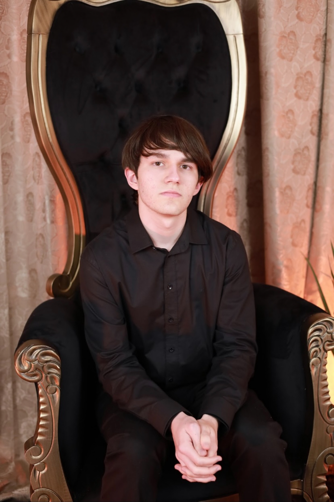

Sobre mim...
Meu nome é Guilherme De Luca. Nasci em 13 de março de 2007 e atualmente tenho 18 anos. Passei minha infância e parte da minha adolescência morando com meus pais em uma cidade muito pequena, no interior do Rio Grande do Sul. Porém, há quase três anos que moro em Passo Fundo, e, agora, estou cursando o primeiro semestre de Ciência da Computação na UPF.
Desde criança, sempre tive curiosidade por aprender coisas novas, principalmente coisas relacionadas a áreas como tecnologia, matemática e ciência. Acredito que parte desse interesse surgiu a partir de quando comecei a participar de algumas olimpíadas de conhecimento, como a OBMEP (de matemática), na qual conquistei uma medalha de bronze e quatro menções honrosas. Por essa razão, percebi que gostava de estudar exatas e queria fazer um curso deste ramo. Também desejava entender programação e como os computadores funcionam. Então, acabei optando pela computação, pois, além de coincidir com os meus interesses, é um campo amplo em constante crescimento e fundamental nos dias atuais.
Espero que, ao logo do curso, eu possa desenvolver diversos conhecimentos e habilidades que me permitam evoluir, tanto na minha carreira quanto como pessoa.
Também já participei de cursos extracurriculares (presenciais e on-line) como: inglês, informática, educação financeira, redação e iniciação científica em matemática.
Clique aqui para acessar o meu GitHub!
